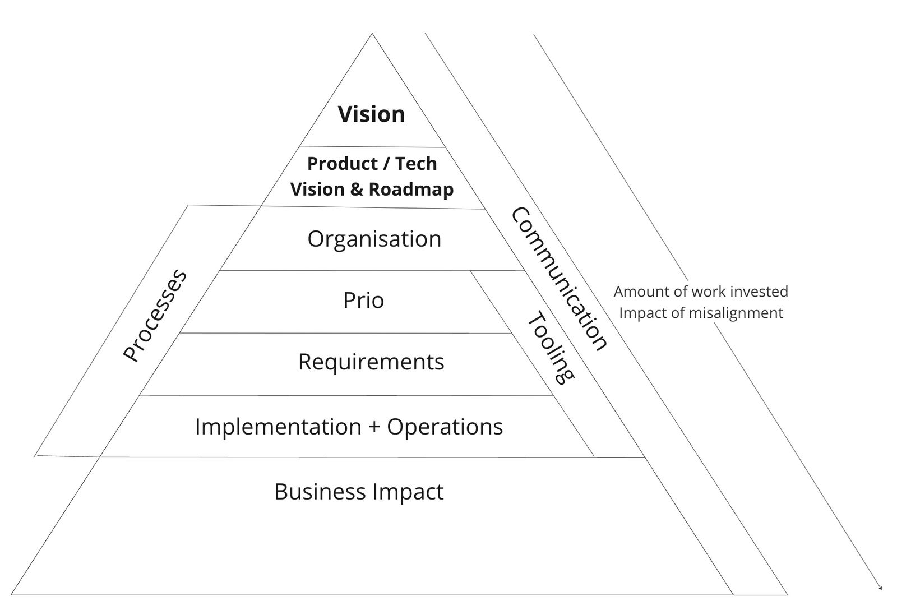

Artifacts for effective alignment
In my professional life, I came across many different companies and organizations. The majority of those were digital companies with its own Tech and Product departments (and only there might the following text applicable). If you have not found your product/market fit, it might be a different game. But if you have, read on.
One of the biggest complications was always the alignment of where to go and how to get there. Does everybody understand the same, is pulling in the same direction, and knows what to do? If you are small enough to fit in a room, things are easier in that regard. The larger you grow and the more remote everybody is, the alignment loses its clear contours. Things will get slower, customer might be unhappy and a clear direction seems to be missing.
That is not always happening, but I have been through that myself, saw it during my coaching at mentoring club and with clients in my consulting activities.
Here is what I learned.
Communication
The alignment must be worked on and communicated to every employee in the company. If people don’t know where to align, they will find something by themselves to align along. Everybody knows that communication is important. The two main key mistakes I made a few times were:
- Not enough communication. If I thought I said it all and everybody knows that: Wrong. I need to say it 20 times and if I can’t hear it anymore, I need to communicate it 10 more times. There are so many reason why people might not get it at the first communication. They really don’t read the email, did not attend the meeting, or were simply distracted.
- Be open even about the uncomfortable truth. I tried to pass over bad news lightly. This confused and did not make the situation and the changed alignment any clearer. People just got conflicting messages. What I learned, is that the majority of the people can handle that. Treating your employees as adults is an underrated employer perk. Don’t make the same mistakes as I did.
Artifacts
A sign of missing alignment are the unclear / missing / unknown artifacts:
- Company Vision
- Product Vision
- Tech Vision
- Product Roadmap
- Tech Roadmap
Do you have them all and everybody in Product/Tech knows them? I conducted many interviews with employees, and asking about these revealed interesting insights about the state of the company.
While the company vision provides a broad, inspirational view of the future, product and tech visions offer more focused direction in their respective domains. Roadmaps then translate these visions into actionable plans, helping to guide the organization’s efforts over time.
1. Company Vision
The company vision is a clear and aspirational statement that outlines the future state that an organization aims to reach. It reflects the long-term goals and aspirations of the company, providing direction and inspiration for all of its stakeholders.
Characteristics: Inspirational, long-term, clear, and concise. Purpose: To provide a sense of direction, motivate employees, and guide strategic planning. Example: “To create a better everyday life for the many people.” – IKEA
2. Product Vision
The product vision is a concise statement that describes the ultimate goal of a product, and the positive change that it aims to bring about for its users. It serves as a guiding star for the product team, helping to ensure that all product development efforts are aligned with the organization’s broader goals.
- Characteristics: Future-oriented, user-focused, motivational, and aligned with the company vision.
- Purpose: To guide product development, inform prioritization, and ensure alignment with user needs and business objectives.
- Example: For an online learning platform: “Empowering learners around the world to achieve their full potential through accessible and personalized education.”
3. Tech Vision
The tech vision outlines the future state of an organization’s technology landscape, reflecting its aspirations in terms of innovation, efficiency, and competitiveness. It helps to guide technology-related decisions, ensuring that they are aligned with the organization’s broader goals.
- Characteristics: Innovative, clear, aligned with the company vision, and reflective of future technology trends.
- Purpose: To guide technology investment and development, ensure alignment with business goals, and drive innovation.
- Example: “To build the world’s most advanced and accessible cloud computing platform, empowering businesses to innovate at the speed of light.”
4. Product Roadmap
The product roadmap is a strategic document that outlines the planned evolution of a product over time. It includes information on upcoming features, enhancements, and milestones, and it helps to communicate the product strategy to stakeholders.
- Characteristics: Visual, timeline-based, flexible, and prioritized.
- Purpose: To communicate the product strategy, align stakeholders, inform planning, and manage expectations.
- Example: A visual timeline showing planned feature releases, updates, and key milestones for the next 12-18 months.
5. Tech Roadmap
The tech roadmap is a strategic plan that outlines the evolution of an organization’s technology stack and infrastructure. It includes details on upcoming upgrades, migrations, and new technology implementations, helping to ensure that the technology landscape evolves in alignment with the organization’s broader objectives.
- Characteristics: Strategic, timeline-based, aligned with the tech vision, and focused on long-term planning.
- Purpose: To guide technology investment, ensure alignment with business objectives, manage risk, and drive innovation.
- Example: A document outlining the planned migration to cloud infrastructure, adoption of new development tools, and upgrades to existing systems over the next several years.
To monitor your advancement towards achieving your objectives, it’s essential to establish performance indicators. I’ve observed that some organizations lay out excellent strategies, yet fail to assess whether they are proceeding in the right direction. When a year passes, there’s collective bewilderment about falling short of their targets. Daily tasks can easily overshadow your broader goals, causing you to deviate from your intended path. Hence, it’s crucial to consistently revisit your objectives, ensuring alignment with your current trajectory. Adjustments are perfectly acceptable if your goals no longer align with your situation or vision.
Why Artifacts are Important:
- Clarity: They provide clarity around the organization’s direction, goals, and values.
- Consistency: They ensure consistency in messaging and behavior across the organization.
- Culture Building: They help to build and reinforce the desired organizational culture.
- Guidance: They provide guidance for decision-making and behavior.
- Motivation: They motivate and engage employees by providing a sense of purpose and direction.
- Accountability: They create accountability by setting clear expectations and tracking performance.
All of that is just a small part of the puzzle of an effective organization. It is a time-consuming task to write those down. It is worth the investment and pays off mid to long term.
Now ask yourself, do you have at least these written down and are they known in your company?
[ ] Company Vision
[ ] Product Vision
[ ] Tech Vision
[ ] Product Roadmap
[ ] Tech Roadmap
[✅] / [❌]
These artifacts have an impact on all things that come in the later product life cycle. If you don’t get this right, the amount of invested work increases the more you get to the business impact. Here is my first sketch to visualize the impact pyramid.

This might be a multipart series. There is so much more to tell.